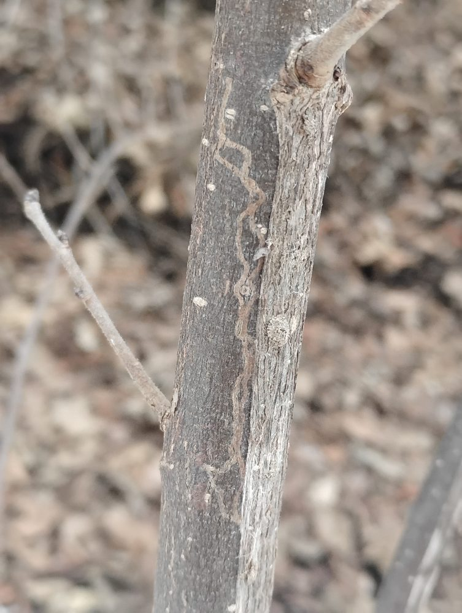
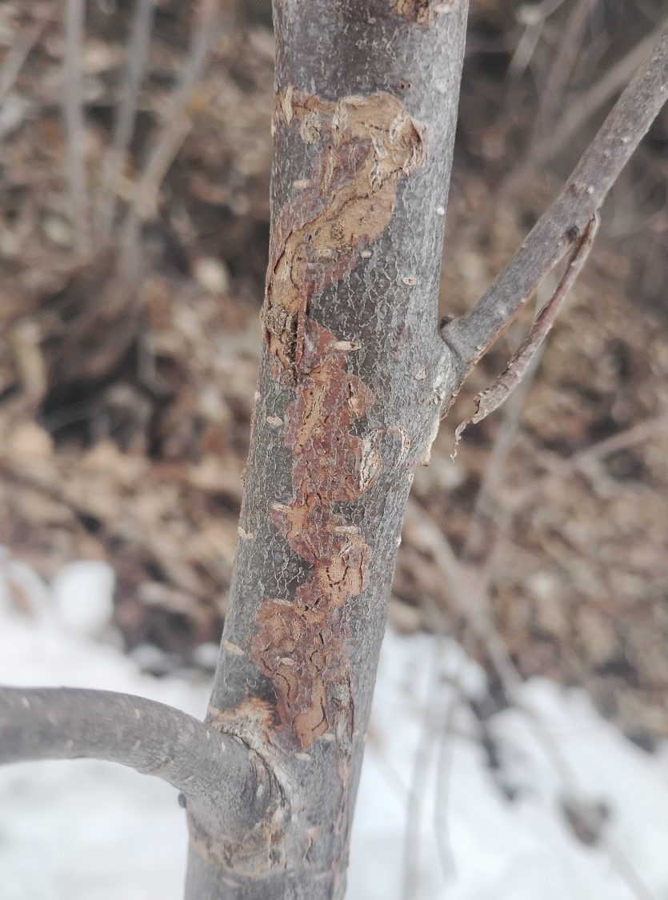
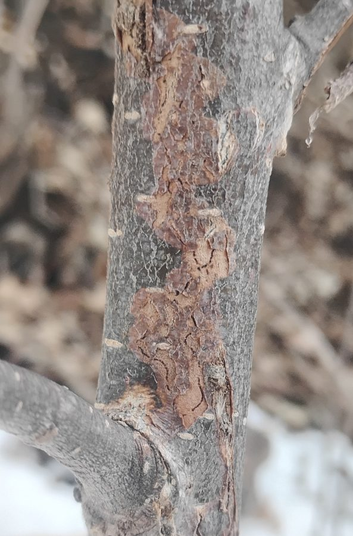
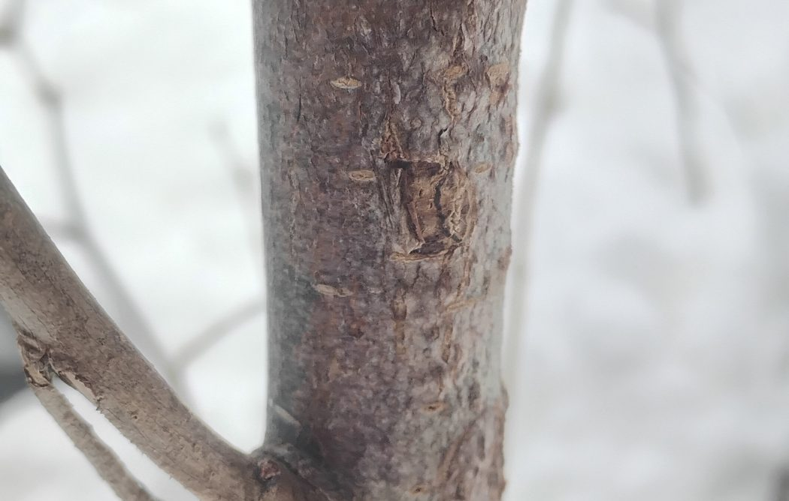
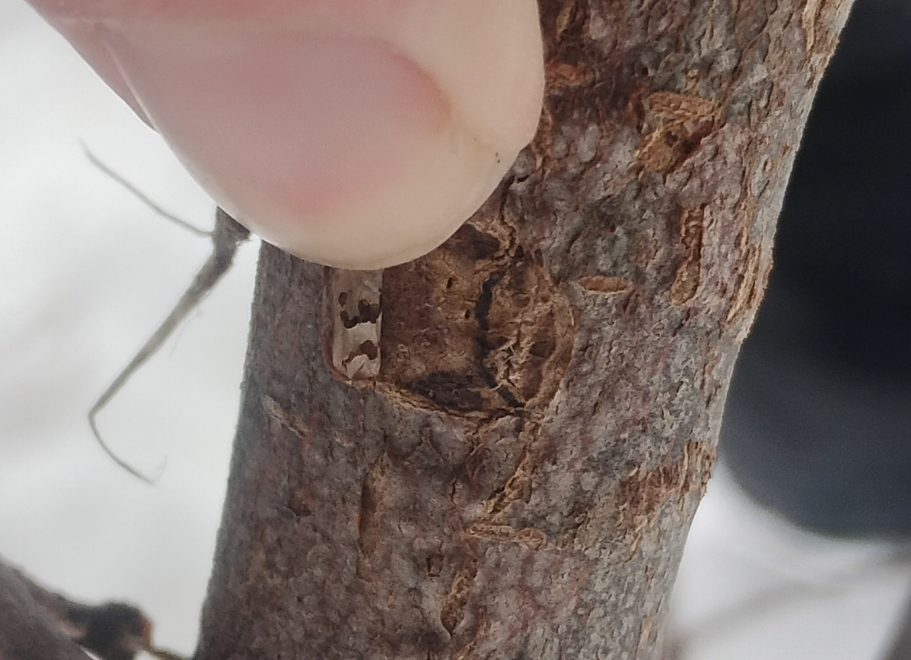
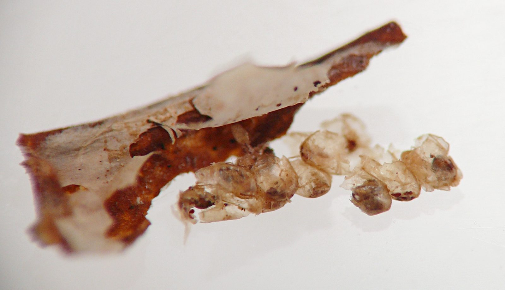
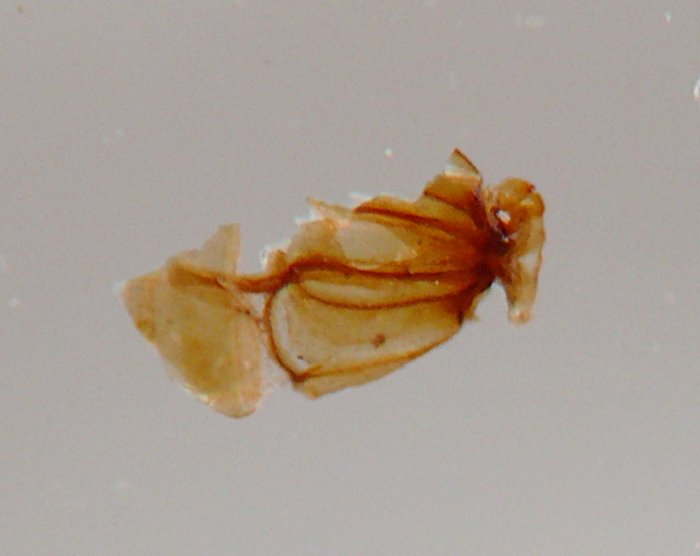

Stem miner (Lepidoptera: Gracillariidae) in Ulmus
| Record no.: | 0805 |
|---|---|
| Feeding guild: | Stem miner |
| Taxonomy: | Lepidoptera: Gracillariidae: Marmara sp. |
| Stages observed: | trace, pupa |
| Distribution observed: | IA |
| Hosts in Ulmus: | undetermined U. sp. (elm) |
I encountered multiple bark mines of this moth on elm saplings in winter 2025-2026. Early mines made by young larvae were narrow and white, while older mines were broad and reddish, with areas where the outer bark had split or flaked off, revealing a tan-colored layer of stem tissue underneath on which the mine's black, broken central frass line could be seen.
In at least one example, I located the bark flap. The larva had constructed it at the terminus of the bark mine, approximately 115 cm above ground level. The whitish, finely woven cocoon was positioned inside the bark flap, with two to four round parasitoid exit holes perforating it. Inside the cocoon I found approximately seven translucent, membranous, pill-shaped parasitoid cocoons, most broken into pieces, along with a portion of the head capsule of the Marmara larva. Eiseman et al. (2017) reported that some single cocoons of Marmara viburnella in their Massachusetts rearing study produced multiple adult parasitoid wasps, such as Quadrastichus (Eulophidae) or Ageniaspis (Encyrtidae).
In his account of Marmara elotella on apple, Forbes (1923) reported "a closely similar, possibly the same, species on elm in Virginia" (p. 182). Several contributor posts on iNaturalist document bark mines on Ulmus spp. (iNaturalist 2026).

 Prev
Prev
{kind=link}
{kind=link}

{kind=link}

{kind=link}

{kind=link}

{kind=link}

{kind=link}

- Eiseman, C.S., Davis, D.R., Blyth, J.A., Wagner, D.L., Palmer, M.W., and T.S. Feldman. 2017. A new species of Marmara (Lepidoptera: Gracillariidae: Marmarinae), with an annotated list of known hostplants for the genus. Zootaxa 4337(2): 198-222.[return to in-text citation]
- Forbes, W.T.M. 1923. The Lepidoptera of New York and neighboring states. Primitive forms, microlepidoptera, pyraloids, bombyces. Cornell University Agricultural Experiment Station Memoir 68: 1-729. Retrieved March 27, 2026 from https://www.biodiversitylibrary.org/page/19819699.[return to in-text citation]
- iNaturalist. 2026. Genus Marmara [with "ulmus" in "Description / Tags" filter field]. Retrieved March 27, 2026 from https://www.inaturalist.org/observations?q=ulmus&taxon_id=177158.[return to in-text citation]
Page created: March 27, 2026. Last update: none